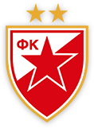

Crvena zvezda je u Ligi Sampiona Bravo, Zvezdo! Fudbaleri Crvene zvezde plasirali su se u grupnu fazu Lige šampiona odigravši 2:2 na gostovanju Salcburgu, u revanšu plej-ofa, posle beogradskih 0:0.


Bravo, Zvezdo! Fudbaleri Crvene zvezde plasirali su se u grupnu fazu Lige šampiona odigravši 2:2 na gostovanju Salcburgu, u revanšu plej-ofa, posle beogradskih 0:0.
Stadion: Red Bul arena
Gledalaca: 26.500
Sudija: Cunejt Čakir
Strelci: Dabur u 45' i 48' (penal) za Salcburg, a Ben u 65' i u 66' za Crvenu
zvezdu.
Salcburg: Stanković, Lajner, Ramaljo, Šlager, Pongarčić, Hajdara, Samaseku, Ulmer,
Volf,
Daka, Dabur.
Crvena zvezda: Borjan, Stojković, Savić, Degenek, Rodić, Jovičić, Krstičić, Simić
(od
37' Jovančić), Ben, Radonjić (od 81' Gobeljić), Milić (od 46' Pavkov).
Kakva je to samo borba bila, meč za infarkt i sudar za pamćenje! Povratak kao iz filma, za
novu
istoriju našeg kluba! Vratili smo se gde nam je mesto.
Apsolutni junak - El Fardu Ben!
Strelac
oba gola vredna plasmana u Ligu šampiona, oba na dodavanja Miloša Degeneka. Samo, bilo bi
nepravedno
njega istaći ispred ostalih, može se reći da je Ben prvi među jednakima - momcima koji će zauvek
ostati
upisani u istoriji Crvene zvezde!
Bila je to borba i te kako dostojna ulaska u Ligu šampiona, i obe ekipe su pokazale zašto su
došle
na sam prag elitnog takmičenja.
Salcburg je od početka konstantno napadao i stvarao šanse, pretio i sa distance, i iz
kaznenog
prostora, ali je naša odbrana odolevala svim izazovima. Pretio je austrijski prvak preko oba krila
i
u nekoliko navrata bio blizu pogotka.
Mogla je i Zvezda da zapreti da je dodavanje Bena za Radonjića bilo samo malo jače u uvodnoj
fazi
utakmice, ili da je naše levo krilo nešto preciznije šutiralo sa distance na isteku pola sata igre.
Pre toga je Milan Rodić u devetom minutu odličnom intervencijom ispred peterca zaustavio
pokušaj
Salcburga, a samo nekoliko sekundi kasnije kapitenska reakcija Vujadina Savića. Borjan je istrčao i
Daka
je imao praznu mrežu ispred sebe, ali je nije pogodio pošto je Zvezdin štoper pravo niotkuda
čudesno
uklizao i sprečio gol.
Onda je na red došlo i to da Borjan sigurnim odbranama ubrizga dodatnu dozu sigurnosti u
poslednju
liniju. Zaustavljao je redom udarce Volfa, Hajdare i Dake, ali je ipak bio nemoćan pred sam kraj
prvog
poluvremena.
Tada je Dabur, najopasniji fudbaler Salcburga, sa ivice peterca našao put do naše mreže
prilikom
centaršuta sa levog krila za 1:0. Nažalost, isti igrač bio je koban po crveno-bele i na samom
početku
drugog dela. Turski sudija Cunejt Čakir je dosudio jedanaesterac posle duela Savića i Volfa, a
precizan
sa penala bio je Dabur i tako doneo austrijskoj ekipi dva gola prednosti.
Činilo se tada da je Liga šampiona daleko, ali... Zvezdaško srce je veće od svakog drugog i
zna
da kuca najjače kada je to najpotrebnije. Usledila su dva preslikana minuta, dva minuta za nove,
zlatne
stranice istorije našeg kluba. Za večnost!
Bila je to magija koju samo puleni Vladana Milojevića, rođenog šampiona, mogu da izvedu!
Kako
se samo Miloš Degenek izborio za loptu na desnoj strani i poput najobučenijih tehničara majstorski
centrirao
na drugu stativu odakle je Ben zatresao mrežu. Nije to bilo samo za 2:1 i nadu, već juriš ka karti
za
grupnu fazu!
Samo nekoliko sekundi kasnije preslikana akcija, Krstičić je pronašao Degeneka i on je sa
desne
strane gotovo identično proigrao Bena, koji izgleda nije dotakao loptu, a onda...
Mreža se zatresla, za 2:2 i erupciju crveno-belog oduševljenja! Do kraja je vođena žestoka
borba,
u kojoj je Milan Pavkov završio krvave glave, ali u kojoj je svaki pojedinac od golmana Borjana do
momaka
na klupi preko saradnika Vladana Milojevića u stručnom štabu dao ogroman doprinos!
Istorija je ispisana! Zvezda je u Ligi šampiona!